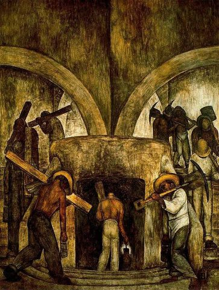

Diego Rivera,1886 - 1957,"Social Realism,Muralism",Mexican,"Diego María de la Concepción Juan Nepomuceno Estanislao de la Rivera y Barrientos Acosta y Rodríguez, known as Diego Rivera (Spanish pronunciation: [ˈdjeɣo riˈβeɾa]; December 8, 1886 – November 24, 1957) was a prominent Mexican painter. His large frescoes helped establish the Mexican mural movement in Mexican art. Between 1922 and 1953, Rivera painted murals in, among other places, Mexico City, Chapingo, Cuernavaca, San Francisco, Detroit, and New York City. In 1931, a retrospective exhibition of his works was held at the Museum of Modern Art in New York. Rivera had a volatile marriage with fellow Mexican artist Frida Kahlo.",http://en.wikipedia.org/wiki/Diego_Rivera,70
